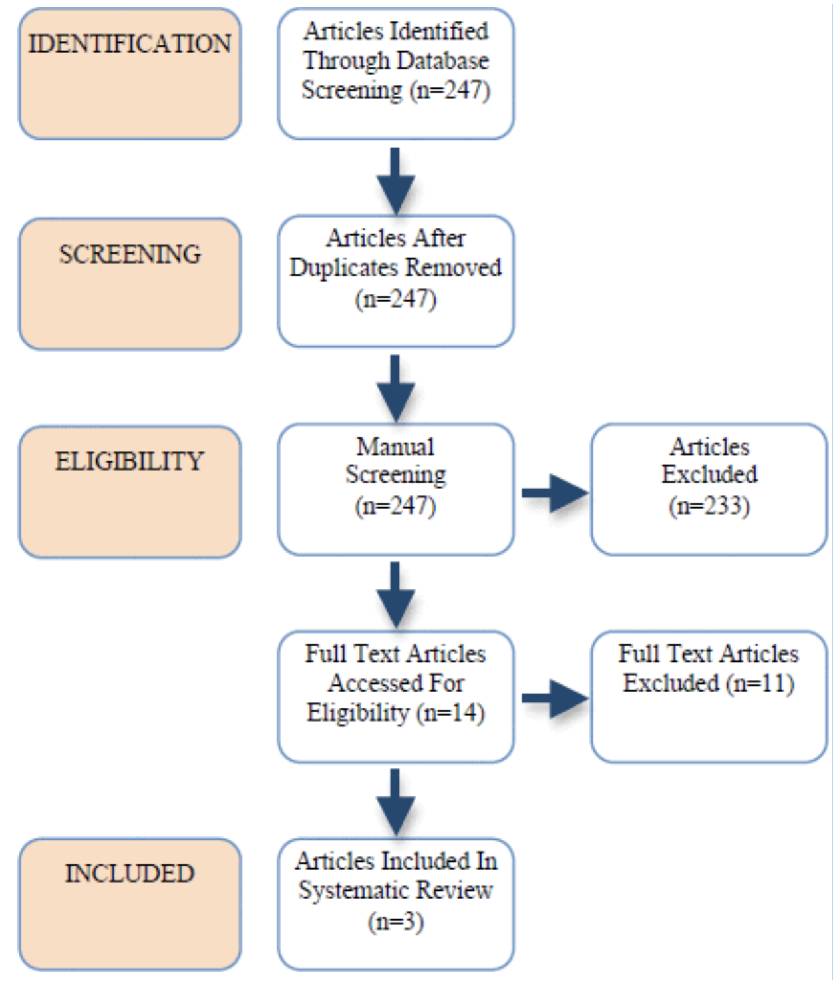
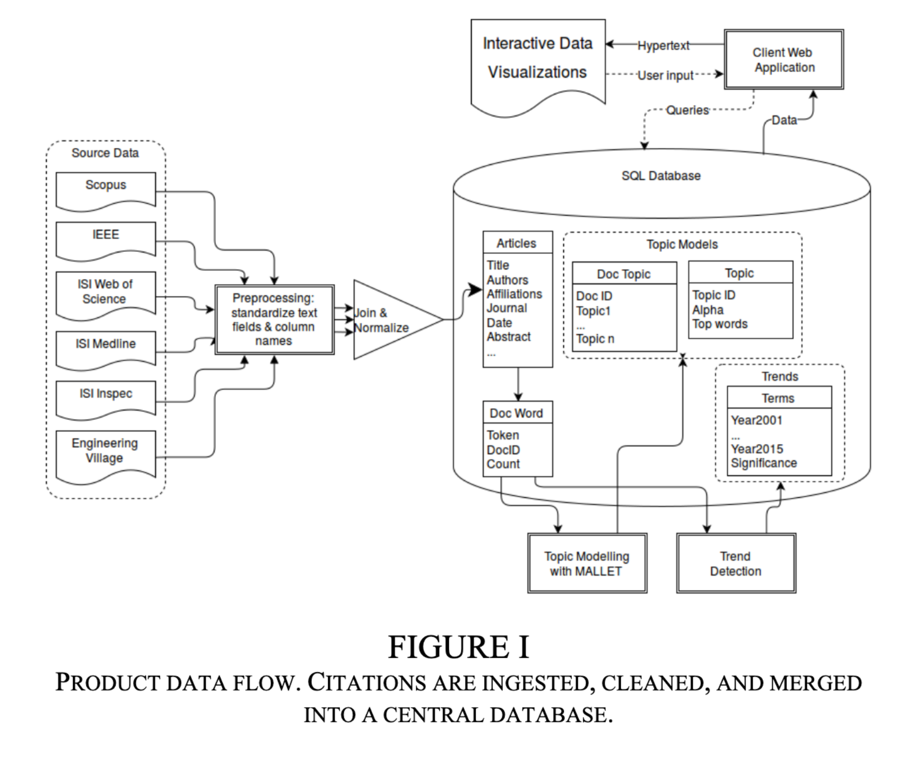
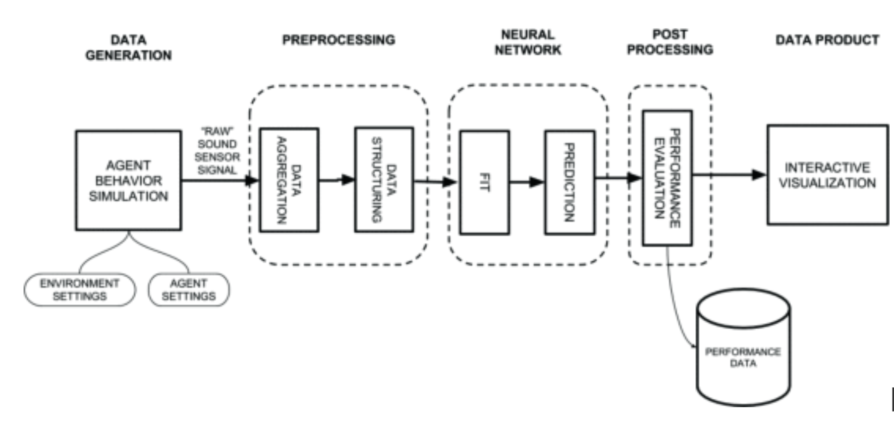

Capstone Paper Factsheet
Overview
- You will produce a publishable paper that presents the results of your capstone project.
- Information on the form, content, and preparation of your paper for publication are provided in this document.
Format
- Length: 6 pages maximum
- Paper size: 8.5” by 11”
- See Templates below for details on fonts, line spacing, etc.
Templates
- Microsoft Word
- LaTeX
- LaTeX Bibliography Files
- Overleaf (This is an online editor that makes producing LaTeX documents easy.)
Abstracts
- Revise your original abstract to correspond with the state of your research at the time of writing the final paper.
- Abstracts describe the paper in condensed form. As a guide, it should address the following:
- Motivation (Why): Provide context for the work and reasons it is important. This is a general statement.
- Focus (What): Write a short statement of the specific focus of the work presented.
- Methodology (How): Describe the methodology used to approach the problem of interest. If the focus of your work is on designing a system, this section frequently focuses on your design ("how" the focus of the work is addressed).
- Results: Identify results. If results are forthcoming, state what you expect to have as results by the time the final paper is due. If the focus of your work is on designing a system, then Results frequently focuses on validation/testing results.
- Your abstract should be 100-500 words.
Acknowledgments
- All contributors not listed authors should be mentioned in an acknowledgments note.
- Clients may opt out of this. Be sure to ask your clients if they want to be acknowledged.
- If they do not wish to be mentioned, use generic nouns to designate their organizations and roles.
Citing Work
- As a rule, all written or presented material must be your own unless you explicitly cite the work of others.
- You may not copy or use the work of anyone else without proper citation.
- Cited material must be correctly referenced in your reports using IEEE format.
- If you have questions about whether something counts as your own work or not, consult the instructor.
Voice and Style
- Do not use the first person. Use either second person plural (“we”) of passive voice where appropriate.
- Do not narrate trials and errors. Describe the state of your project and understandings at the time of writing.
- Use direct and simple language. Avoid superfluous constructions. For example, instead of “We developed a model with the purpose of establishing a foundation for ...” say “Our model established ...”
Code
- Name all important code packages used.
Figures and Tables
- Use block diagrams to describe data flow (pipeline) when appropriate.
- Show mathematical formulae for core methods.
- Tables should be legible and within the page’s columns.
- Diagrams should be labeled clearly, crisp, and readable.
Generic Outline
These elements are often included in capstone papers. You may consider collapsing some of these to reduce the length of your paper. For example, you may be able to include references to previous work in your research question description, or you may combine the data description with the methodology.
- Introduction / Project Goal / Research Questions
- Literature Review / Background / Related Work
- Data Description
- Methodology
- Results
- Discussion
- Conclusion / Future Work / Recommendations
- Acknowledgements
Example Papers
Dataflow diagrams

Raiker, J. Latayan, S. Pagsuyoin and A. Mathieu, “Use of biomarkers in depression diagnostics,” 2016 IEEE Systems and Information Engineering Design Symposium (SIEDS), Charlottesville, VA, USA, 2016, pp. 245-249, doi: 10.1109/SIEDS.2016.7489307.

Arrivillaga, D. Greenleaf, M. Hawthorn and R. Alvarado, “Revealing the landscape: Detecting trends in a scientific corpus,” 2016 IEEE Systems and Information Engineering Design Symposium (SIEDS), Charlottesville, VA, USA, 2016, pp. 292-297, doi: 10.1109/SIEDS.2016.7489317.

Cruser, A. C. Haworth, L. P. Alonzi and R. C. Alvarado, “Quiet agent detection through simulation and classification,” 2018 Systems and Information Engineering Design Symposium (SIEDS), Charlottesville, VA, 2018, pp. 282-286, doi: 10.1109/SIEDS.2018.8374752.
Questions? Send email to rca2t@virginia.edu.